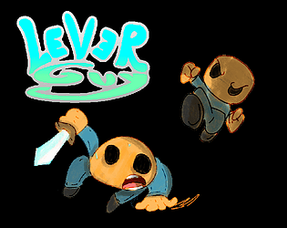

Lien vers la page itch.io
Ceci est une sorte de demo visant à recréer Lever Guy mon premier jeu afin de mieux préparer une suite plus complète et plus long
si vous trouvez des bugs merci de les partager dans un commentaire
"Histoire" :
vous êtes tomber dans une caverne en possession d'un collier vous permettant de manipuler a votre guise un levier vous aidant à trouvez les 4 cartes afin de terrasser la terreur des profondeur